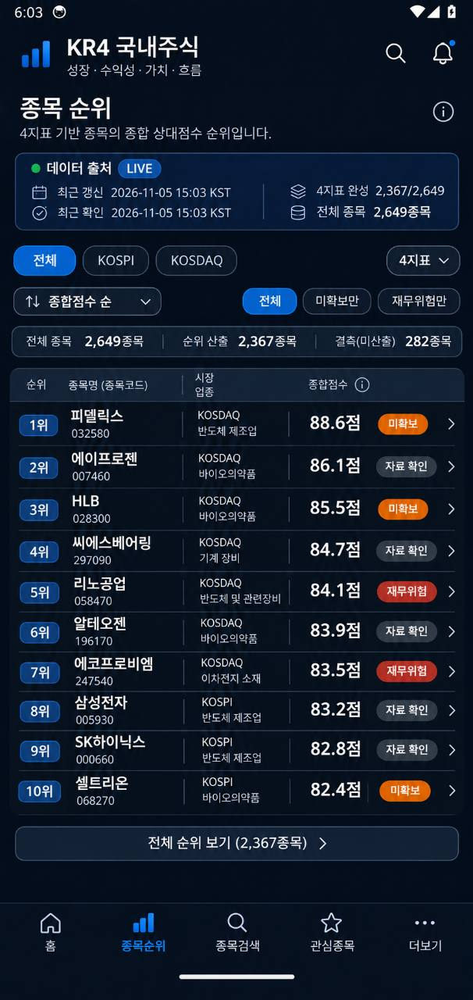
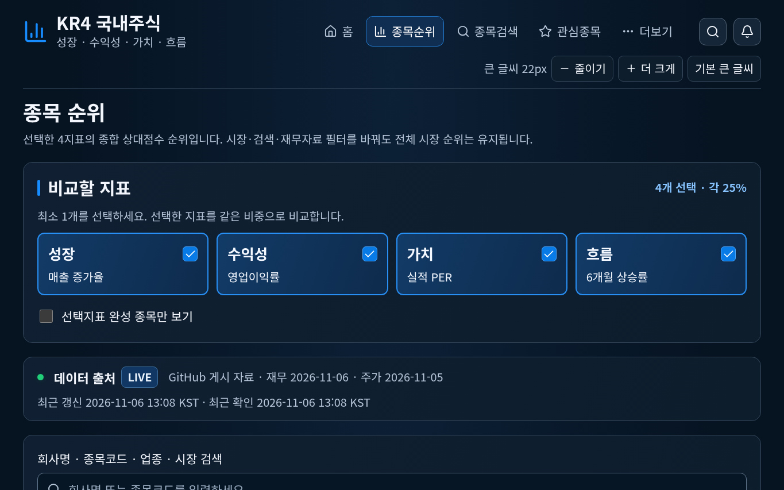
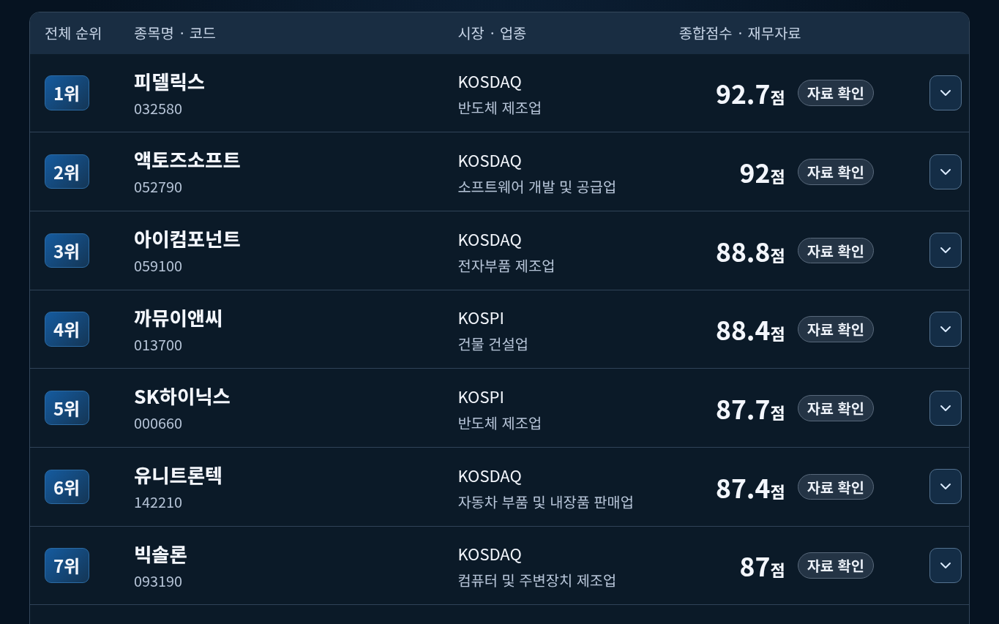

공식 공개 웹 · 실제 실행 증거
새 익명 브라우저에서 공식 Pages URL로 직접 접속했습니다. 로그인·쿠키 사전 주입·호스팅 안내 클릭이 없었습니다. Linux Chromium 원본 캡처이며 실제 Windows 브라우저 결과는 별도 CI 증거, 실물 LG그램 검증은 미실행으로 구분합니다.
이 파일은 비교용 HTML입니다. 왼쪽은 사용자가 승인한 모바일 기준 이미지이며 오른쪽은 실제 PUBLIC 웹사이트 브라우저 실행 캡처입니다. 이미지 생성 시안이 아닙니다. 원본 PNG·JPEG는 편집하지 않았으며 화면의 숫자와 날짜 차이는 실제 데이터에 따른 것입니다. PC용 큰 글씨·상단 메뉴·펼친 지표 선택은 의도한 접근성 변경입니다.



{
"url": "https://irewon1-lgtm.github.io/Kook/#ranking",
"capturedAt": "2026-11-06T04:08:47.954Z",
"viewport": {
"width": 1365,
"height": 853
},
"fontSize": "22px",
"source": "LIVE",
"sourceCommit": "e388ea2b7aa52843af5c0d32861cc0493bfe5f5a",
"generationId": "c76743237bbcdc05e5e6ca74df35082235ac9a103238e8e7765c8eaccf0a3e71",
"stocksSha256": "7ee9f2604dc5ebb07e28f6f853f5f9dc734d1e3d5c0d6b9ebc12516daba751ee",
"browserEnvironment": "linux chromium",
"actualWindowsBrowser": false,
"physicalLgGramVerified": false,
"uiCommit": "e388ea2b7aa52843af5c0d32861cc0493bfe5f5a",
"accessActions": null,
"directFreshAnonymousAccessPassed": true
}원본 메타데이터 JSON원본 파일 SHA-256 목록